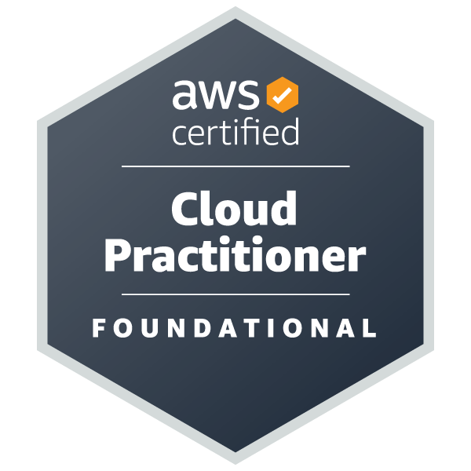
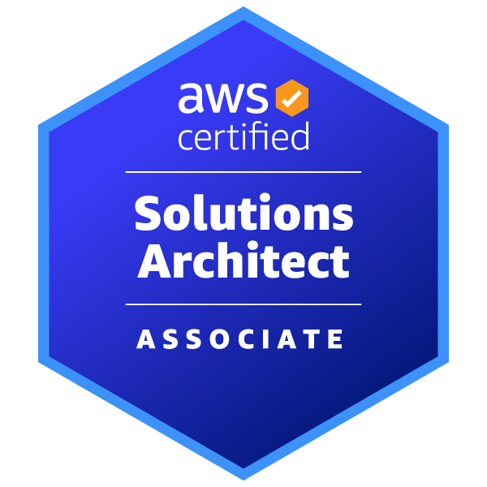

RESUME
Summary
IT Infrastructure & Operations Professional with over a decade of experience spanning massive-scale data center operations, global enterprise IT support, and technical project leadership. Proven track record of directing complex IT deployments and network resiliency initiatives at companies like WeWork and Thoughtworks, supporting thousands of end-users across international borders. Hands-on skills in high-density physical hardware, enterprise networking, and system automation.
Technical Skills
Infrastructure & Hardware: Data Center Operations, High-Density Server Racking, Hardware Lifecycle Management, Tier 3 Troubleshooting, Facility Environmental Controls (Power/Thermal).
Networking & Monitoring: Cisco, Juniper, Ruckus APs, VLAN Configuration, TCP/IP, Fault-Tolerance Testing, SolarWinds, Zabbix, PingPlotter, Netspot.
System Automation: Linux Administration, Bash Scripting, Python, Docker, Mobile Device Management (SimpleMDM and Microsoft Intune).
Certifications
AWS:
2024
AWS Solutions Architect Associate certification
AWS Certified Cloud Practitioner certification
Apple:
2013
Mac OS X Support Essentials 10.8
2011
Apple Certified Support Professional 10.6


Professional Experience
DATA CENTER OPERATION ENGINEER, TECHNOLOGY HUB SIAM
JUL 2025 - PRESENT
- Directed the physical deployment, maintenance, and operational health of a massive-scale facility encompassing three data halls and 270 racks, ensuring continuous high availability for critical workloads.
- Managed the end-to-end hardware lifecycle, network connectivity, and Tier 3 physical troubleshooting for a high-density fleet of 1,620+ compute servers and 100+ enterprise storage servers.
- Monitored and optimized facility environmental controls (temperature, humidity, power redundancy) and system health metrics, maintaining strict operational compliance and safeguarding infrastructure integrity.
- Executed critical enterprise change management and maintenance operations—from preparation and deployment to comprehensive documentation and post-activity verification—minimizing disruption to live services.
TSG SUPPORT ANALYST, BAIN & COMPANY
OCT 2023 - APR 2024
- Supported infrastructure and systems operations including Active Directory and Azure AD user and access management, MFA enforcement, and identity administration.
- Provided operational support for office network connectivity, system availability, and AV infrastructure in a corporate environment.
- Coordinated with vendors and internal teams to support procurement, maintenance, and issue resolution for IT infrastructure services.
SENIOR ASSOCIATE, IT INFRASTRUCTURE ANALYST, THOUGHTWORKS
OCT 2022 - SEP 2023
- Directed end-to-end IT infrastructure projects for new office build-outs in Bangkok and Ho Chi Minh City, managing project timelines, vendor coordination, and successful delivery for Day-1 operational readiness.
- Provided technical support for a highly technical user base of software engineers and consultants, resolving complex macOS, hardware, and local network issues.
- Collaborated with regional IT and facilities teams to deploy and standardize enterprise network equipment, AV systems, and local servers while enforcing global security compliance.
- Automated device provisioning and streamlined onboarding by the Apple Business Manager with SimpleMDM for zero-touch macOS deployments.
- Administered physical security via the Genea access control platform, optimizing secure entry protocols and managing access rights for internal employees and site visitors.
TECHNOLOGY SERVICES LEAD, WEWORK
JUL 2018 - SEP 2022
- Directed cross-border enterprise IT and network infrastructure support for 12-15 major commercial buildings across Southeast Asia and Australia (including Bangkok, Singapore, Ho Chi Minh, Sydney, Brisbane, Perth, and Melbourne).
- Managed physical layer readiness and hardware lifecycles for enterprise networking equipment (Cisco C4510 switches, Juniper SRX550 routers, Ruckus 750 APs), including VLAN consistency, IP allocation, and continuous connectivity validation.
- Administered enterprise monitoring and traffic analysis tools (SolarWinds, Zabbix, PingPlotter, Netspot) to proactively detect bandwidth overutilization, identify network bottlenecks, and resolve wired/wireless interruptions.
- Streamlined regional IT deployments through automation, utilizing custom scripts to deploy CUPS print servers across Mac mini infrastructure and leveraging Apple Configurator 2 for Mobile Device Management (MDM) provisioning
- Executed network resiliency and fault-tolerance testing alongside global IT teams, acting as the primary technical liaison for ISPs, hardware vendors, and 3rd-party contractors to manage RMAs and resolve site outages
IT FIELD TECHNICIAN, UBER
DEC 2017- APR 2018
- Provided on-site IT and infrastructure support for office operations, including network troubleshooting, systems supports and vendor coordination.
- Maintained AV systems, managed the software access requests, and supported IT asset tracking.
IT HELPDESK TECHNICIAN, BOOKING.COM B.V.
JAN 2017 - MAY 2017
- Provided level 1 support for users across US, SEA, and European time zones.
- Resolved Mac/Windows computers, applications, and network connectivity issues.
- Manages Cisco phone setups, Windows workstations deployment, server room monitoring, Active Directory user accounts administration, and IT equipment provisioning.
IT SUPPORT OFFICER, PEAS AND UNDERSTANDING
JUN 2016 - NOV 2016
- Provided support for Adobe Photoshop troubleshooting, Adobe CC access and license administration, and Mac desktop assistance to ensure smooth operation.
- Monitored internet connectivity, maintained the server room, and assisted users in transferring completed artworks to HQ.
- Conducted weekly Eizo monitors calibrations to ensure color accuracy and oversaw IT asset inventory and purchasing.
LOCAL IT, TLSCONTACT
AUG 2014 - JUN 2016
- Managed and maintained Windows workstations, printers, and biometric equipment while ensuring strict compliance with ISO 27001 security standard and business continuity protocols.
- Conducted security awareness training programs for staff members with security best practices and strengthened organizational security posture.
ISTUDIO TRAINER, SPVI
MAR 2006 - JUL 2014
- Delivered engaging Apple product trainings.
- Showcase expertise in Mac applications and mobile devices while serving as a technical support representative for Apple products.
- Proactively resolved macOS and application issues, highlighted new features, and showcased an understanding of Apple's ecosystem.